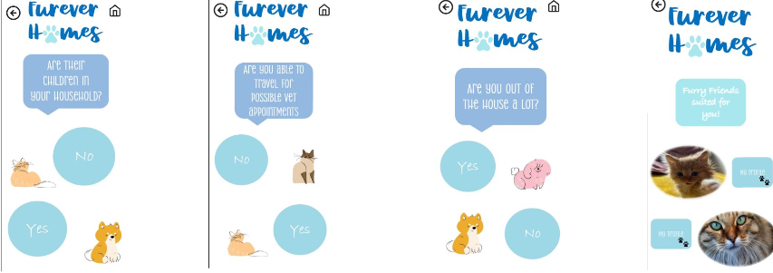

App Design
Furever Homes

I created a mockup pet adoption app in Figma. The aim for the app was to create an adoption app suitable for all ages and to make it easier and accesible to adopt pets.
I created the layout for the app and designed a logo.
The process
Planning
For this project I started by researching exsiting pet adoption forms and websites and gathering information. I wanted the app to be suitable for all ages and easy for people to find a pet suited for them. To do this I created a survey and sent it to classmates and collegues to complete. From this feedback I started to plan what to include in my app.
My role
What I was responsible for
I created an in app quiz that would bring users to selected pets that matches their lifestyle and desires in a pet. I wanted my app to be straight forward and easy to use. Apps can have many different features that could confuse older users so having things simple yet affective means more people will be able to use it and enjoy it. I also didn't want to have too much happening on the screen as to not overwhelm the user. Pop ups and different features can become too much or confusing so having everything clear and visible added an aesthetically pleasing side to the app but also a more functional app

Reflection
What I learned
From doing this project I learnt a lot about what it means to create something inclusive and suitable for everyone. At times it could be challenging to remember to include all of these different types of features. Overall it was an insightful project to work on to see how features we can look past could be a make or break for others.